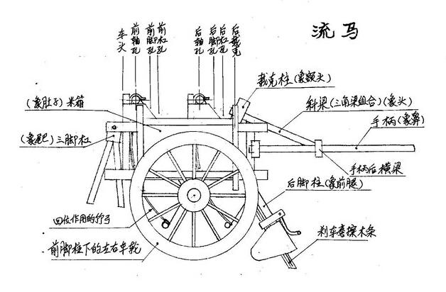
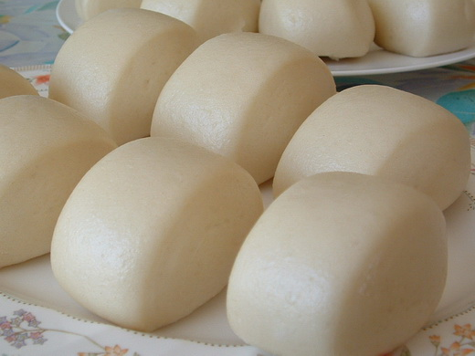
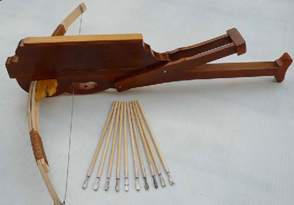

He served as the Imperial Chancellor (or Prime Minister) and regent of the state of Shu Han during the Three Kingdoms period. He is recognised as the most accomplished strategist of his era, and has been compared to Sun Tzu, the author of The Art of War.
诸葛亮(181–234)
a Chinese statesman, military strategist, writer, engineer and inventor
Family Name: 诸葛 (Zhuge)
First Name: 亮 (Liang)
Courtesy Name: 孔明 (Kongming)

Statesman
Military strategist
Often depicted wearing a Taoist robe and holding a hand fan made of crane feathers, Zhuge Liang was an important military strategist, statesman and accomplished scholar and inventor. His reputation as an intelligent and learned scholar grew even while he was living in relative seclusion, earning him the nickname "Wolong" or "Fulong" (both literally mean "Crouching Dragon").
Writer
Zhuge Liang's memorial, the Chu Shi Biao (出师表), written prior to the Northern Expeditions, provided a salutary reflection of his unwavering loyalty to the state of Shu.The memorial moved some readers to tears. In addition, he wrote Admonition to His Son (諸葛亮誡子書) in which he reflected on his humbleness and frugality in pursuit of a meaningful life.
| The list of articles/books |
|
Inventor & Engineer
|
天灯 or 孔明灯 (Flying Laterns) |

木牛流马 (a transportation device) |
|

馒头 (mantou) |

十字连弩(landmine) |
Zhuge Liang was believed to be the inventor of the flying lanterns (天灯 or 孔明灯), mantou (馒头), the landmine (十字连弩) and a transportation device (木牛流马).
木牛流马 (wooden ox and flowing horse): A mysterious but efficient automatic transportation device (initially used for grain)
十字连弩 (landmine), also known as 諸葛弩 (Zhuge Crossbow): This type of semi-automatic crossbow is an improved version of a model that first appeared during the Warring States period (though there is debate over whether the original Warring States period bow was semi-automatic, or rather shot multiple bolts at once). Nevertheless, Zhuge Liang's version could shoot farther and faster.
天灯 (Flying Laterns): An early type of hot air balloon used for military signalling, known as 孔明灯 (the Kongming lantern), is also named after him. It was said to be invented by Zhuge Liang when he was trapped by Sima Yi in Pingyang. Friendly forces nearby saw the message on the lantern paper covering and came to Zhuge Liang's aid. Another belief is that the lantern resembled Zhuge Liang's headdress, so it was named after him.
馒头 (mantou):A type of cloud-like steamed bread or bun popular in Northern China
Folklore After subduing the Nanman king Meng Huo, Zhuge Liang led the army back to Shu, but met a swift-flowing river which defied all attempts to cross it. A barbarian lord informed him that in olden days, the barbarians would sacrifice 49 men and throw their heads into the river to appease the river deity and allow them to cross. As Zhuge Liang did not want to cause any more of his men to lose their lives, he ordered his men to slaughter the livestock the army brought along, and fill their meat into buns shaped roughly like human heads (round with a flat base). The buns were then thrown into the river. After a successful crossing, he named the bun "barbarian's head" (mántóu, 蠻頭, which evolved into the modern 饅頭). Another version of the story relates back to Zhuge Liang's southern campaign when he instructed that his soldiers who had fallen sick from diarrhea and other illnesses in the swampy region be fed with steamed buns with meat or sweet fillings.If you have time, you should read more about this incredible human
English Wikipedia entry
Chinese Wikipedia entry